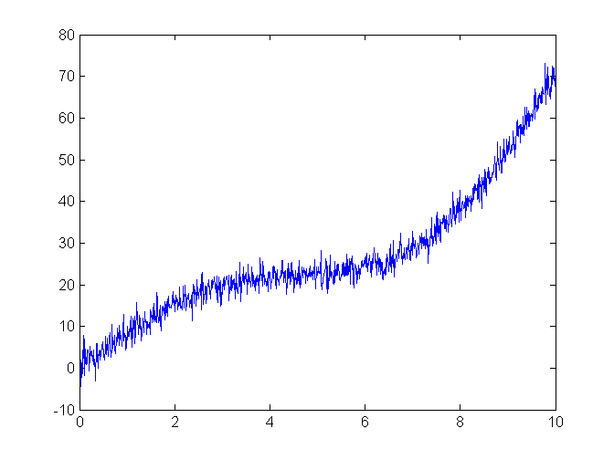
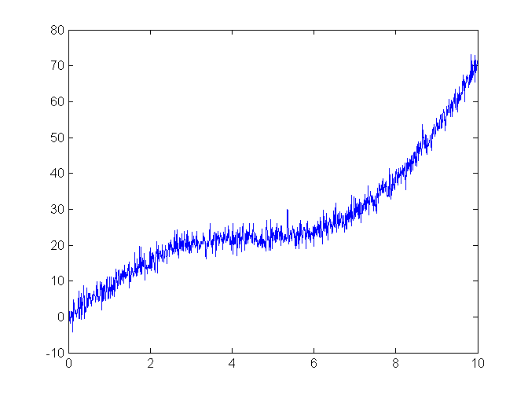
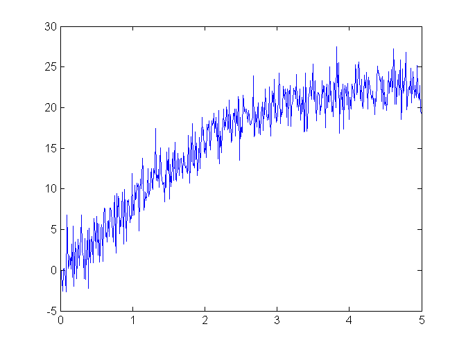

Exercise 6
Contents
6.1 Write a script that plots the given expression
t=0:0.01:10; v=randn(size(t)); y = 0.5*t.^2 + 2*t + 10*sin(pi*t/5)+ 2*v; plot(t,y); figure(gcf)
6.2 Write a function to do the same job
[y,t]=ex6_23(5,10,0.01);
6.3 Modify the function to accept default values
ex6_23;
6.4 Modify the function to accept a given time span
ex6_23(5,0:.01:5);